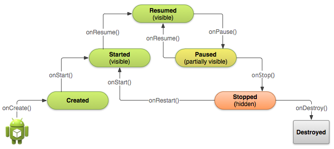

What is the life cycle of an Android activity? Why are so many similar
sounding methods (onCreate(), onStart(), onResume()) called during
initialization, and so many others (onPause(), onStop(), onDestroy())
called at the end?
When are these methods called, and how should they be used properly?
Answer
See it in Activity Lifecycle (at Android Developers).

onCreate() :
Called when the activity is first created. This is where you should do all
of your normal static set up: create views, bind data to lists, etc. This
method also provides you with a Bundle containing the activity's previously
frozen state, if there was one. Always followed by onStart().
onRestart() :
Called after your activity has been stopped, prior to it being started
again. Always followed by onStart()
onStart() :
Called when the activity is becoming visible to the user. Followed by
onResume() if the activity comes to the foreground.
onResume() :
Called when the activity will start interacting with the user. At this point
your activity is at the top of the activity stack, with user input going to
it. Always followed by onPause().
onPause ():
Called as part of the activity lifecycle when an activity is going into the
background, but has not (yet) been killed. The counterpart to onResume().
When activity B is launched in front of activity A, this callback will be
invoked on A. B will not be created until A's onPause() returns, so be sure
to not do anything lengthy here.
onStop() :
Called when you are no longer visible to the user. You will next receive
either onRestart(), onDestroy(), or nothing, depending on later user
activity. Note that this method may never be called, in low memory
situations where the system does not have enough memory to keep your
activity's process running after its onPause() method is called.
onDestroy() :
The final call you receive before your activity is destroyed. This can
happen either because the activity is finishing (someone called finish() on
it, or because the system is temporarily destroying this instance of the
activity to save space. You can distinguish between> these two scenarios
with the isFinishing() method.
When the Activity first time loads the events are called as below:
onCreate()
onStart()
onResume()
When you click on Phone button the Activity goes to the background and the
below events are called:
Exit the phone dialer and the below events will be called:
onRestart()
onStart()
onResume()
When you click the back button OR try to finish() the activity the
events are called as below:
onPause()
onStop()
onDestroy()
Activity States
The Android OS uses a priority queue to assist in managing activities running
on the device. Based on the state a particular Android activity is in, it will
be assigned a certain priority within the OS. This priority system helps
Android identify activities that are no longer in use, allowing the OS to
reclaim memory and resources. The following diagram illustrates the states an
activity can go through, during its lifetime:
These states can be broken into three main groups as follows:
Active or Running - Activities are considered active or running if they
are in the foreground, also known as the top of the activity stack. This is
considered the highest priority activity in the Android Activity stack, and as
such will only be killed by the OS in extreme situations, such as if the
activity tries to use more memory than is available on the device as this
could cause the UI to become unresponsive.
Paused - When the device goes to sleep, or an activity is still visible
but partially hidden by a new, non-full-sized or transparent activity, the
activity is considered paused. Paused activities are still alive, that is,
they maintain all state and member information, and remain attached to the
window manager. This is considered to be the second highest priority activity
in the Android Activity stack and, as such, will only be killed by the OS if
killing this activity will satisfy the resource requirements needed to keep
the Active/Running Activity stable and responsive.
Stopped - Activities that are completely obscured by another activity are
considered stopped or in the background. Stopped activities still try to
retain their state and member information for as long as possible, but stopped
activities are considered to be the lowest priority of the three states and,
as such, the OS will kill activities in this state first to satisfy the
resource requirements of higher priority activities.
Sample activity to understand the life cycle*
import android.app.Activity;
import android.os.Bundle;
import android.util.Log;
public class MainActivity extends Activity {
String tag = "LifeCycleEvents";
/** Called when the activity is first created. */
@Override
public void onCreate(Bundle savedInstanceState) {
super.onCreate(savedInstanceState);
setContentView(R.layout.main);
Log.d(tag, "In the onCreate() event");
}
public void onStart()
{
super.onStart();
Log.d(tag, "In the onStart() event");
}
public void onRestart()
{
super.onRestart();
Log.d(tag, "In the onRestart() event");
}
public void onResume()
{
super.onResume();
Log.d(tag, "In the onResume() event");
}
public void onPause()
{
super.onPause();
Log.d(tag, "In the onPause() event");
}
public void onStop()
{
super.onStop();
Log.d(tag, "In the onStop() event");
}
public void onDestroy()
{
super.onDestroy();
Log.d(tag, "In the onDestroy() event");
}
}
Suggest
Activity has six states
- Created
- Started
- Resumed
- Paused
- Stopped
- Destroyed
Activity lifecycle has seven methods
onCreate()onStart()onResume()onPause()onStop()onRestart()onDestroy()

diagram source
Situations
-
When open the app
onCreate() --> onStart() --> onResume()
-
When back button pressed and exit the app
onPaused() -- > onStop() --> onDestory()
-
When home button pressed
-
After pressed home button when again open app from recent task list or clicked on icon
onRestart() --> onStart() --> onResume()
-
When open app another app from notification bar or open settings
-
Back button pressed from another app or settings then used can see our app
onRestart() --> onStart() --> onResume()
-
When any dialog open on screen
-
After dismiss the dialog or back button from dialog
-
Any phone is ringing and user in the app
-
When user pressed phone's answer button
-
After call end
-
When phone screen off
-
When screen is turned back on
onRestart() --> onStart() --> onResume()